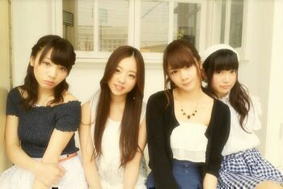
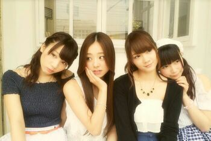
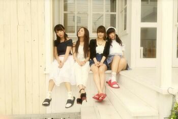

| 2014/07 18 Fri | 〜のぎ天 & のぎどこ〜 まに。v(・∀・*) |
皆さんこんにちわ。
まに or ろってぃ−だよ。
改めて説明するね。
ろってぃ−とは 、
「 まひろってぃ−」からきた「ろってぃ−」をの部分をとっています。
まひろってぃー、あかりってぃー、みちるってぃーと言う青春を共にした(共にダンスなどを楽しんでた)３人衆がありまして、その時のアダ名を今でも使っています。
あかりってぃーとは特に付き合いが長く、親友。
何でか分かんないけど、ダンスの先生によく怒られ、トイレ掃除もさせられた。
何でか分かんないけどめっちゃ厳しくされてた。
そうして、今の自分ができた 笑
まにとは、メンバーがつくった。
元ある「まひろ」は何も関係ない。
容姿と行動と喋り方？色々含めた上で何故だか「まに」っぽいって言われて、「まにまに〜」「まにティア」「まにまにむにえる。」とか言われるようになって、
まにって言われている。
こんな まに or ろってぃ− ですけど
よろしくお願いいたします。
はい そして『 乃木坂って、どこ？ 』で「 乃木坂頭NO王決定戦 」とゆう企画がありましたが、、、
えっと順位は なんとも言えない。〜20位〜
良くもないし 悪くもない...。
一番中途半端で、 OA見たら中途半端組はカット 笑
あの頃みたいに理科で100点とれるほどの頭はもうない。笑 うわぁ〜ん・゜・(つД｀)・゜・
しかたない しかたない

そしてそして、先週の金曜日から始まりました！
新番組『のぎ天』が楽天SHOWTIMEにて始まりました。毎週金曜配信です！
なかなか面白くて、メンバーの普段見れない顔が見れたりだとか... 好評みたいで、、、\(*´ω`*)/やた
今回のblogに貼っている写真は全部、のぎ天収録の場所で撮ったものです\☆/
そう !! 第一回めは私服での収録でした.
のぎ天は私服での収録の方がいいんじゃないか？と思いました！
理由は、メンバーそれぞれの個性が見えるからです.♪
自然な表情..*
1.
2.

3.

今日は、映画『渇き。』を観に行ってきました。
思ってた以上に グロテスクだった...
でも いい作品でした。
私も、映画に出たいです。

ではでは、また更新しま〜す
のし 〜たそがれ中〜

コメント(161)
2014/07/18 22:30